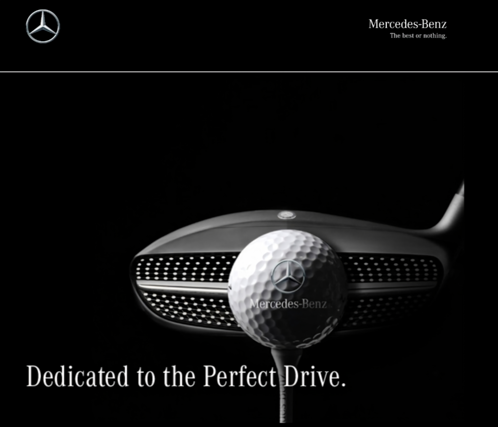
As a full-time Copywriter at BBDO in Melbourne, Australia, I was part of a creative team that worked on campaigns for Mercedes-Benz.
We built and launched campaign microsites, landing pages, email marketing campaigns, print mailers, retail flyers, and more, all of which I wrote copy for.
Our email marketing campaigns regularly exceeded industry averages for open rates and click-through rates.
Some highlights include our end-of-year campaigns, which consisted of microsites and emails celebrating product launches, brand partnerships, technological innovations, sustainability milestones, and culture and sporting events. I researched, wrote, and adapted all the copy for different audiences.
Our 2016 end-of-year campaign was hugely successful, with an email open rate of 47% (more than double the industry average of 20.51%). It also achieved click-through rate of 8.21%, nearly four times the norm of 2.19%. See some highlights below.
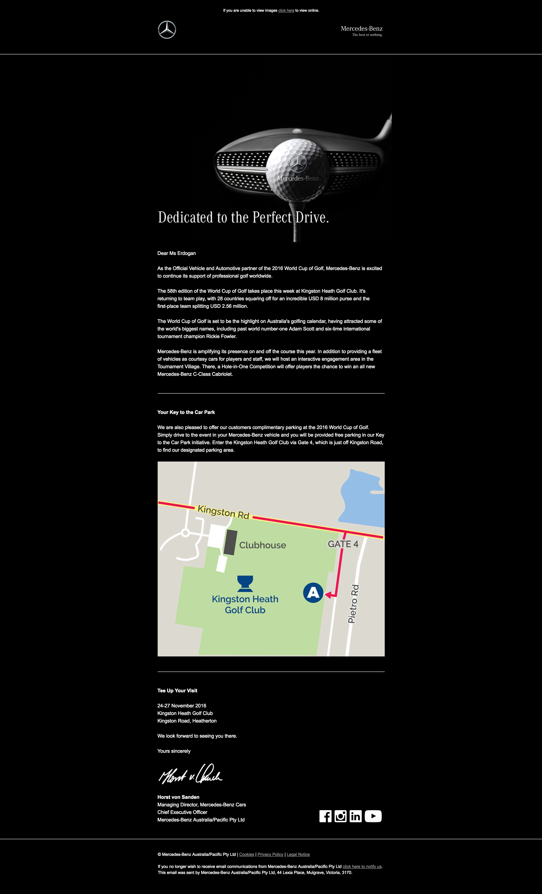
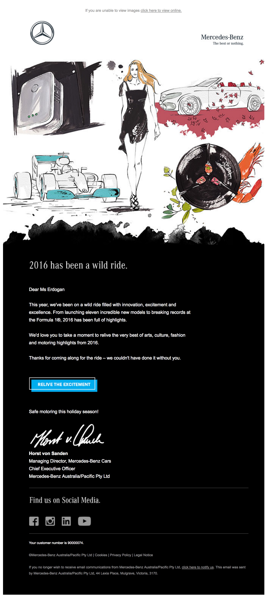
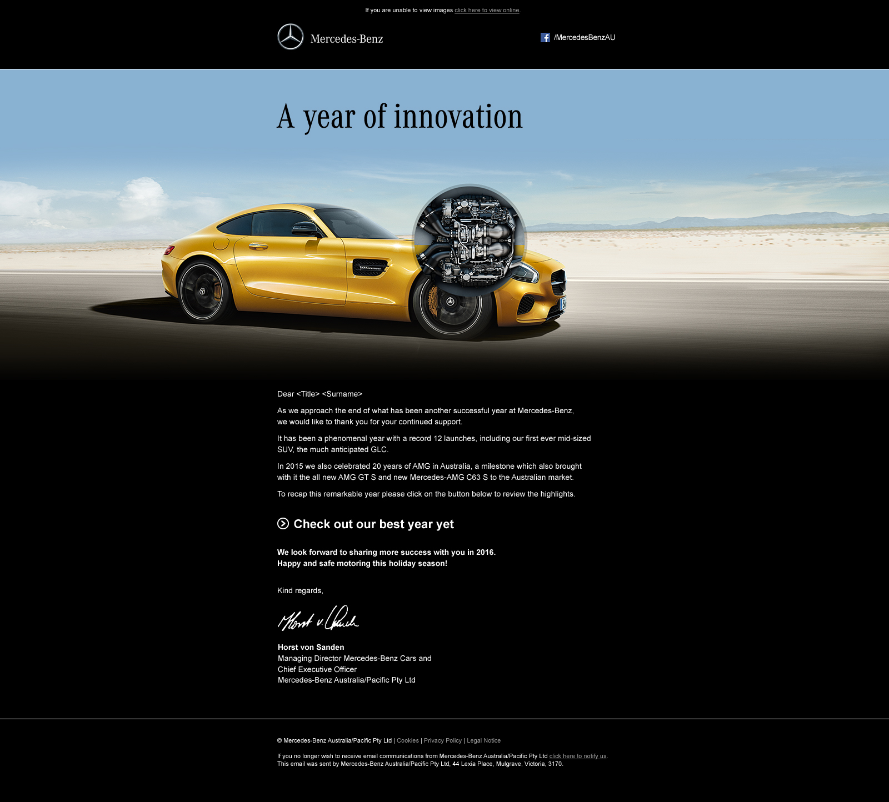
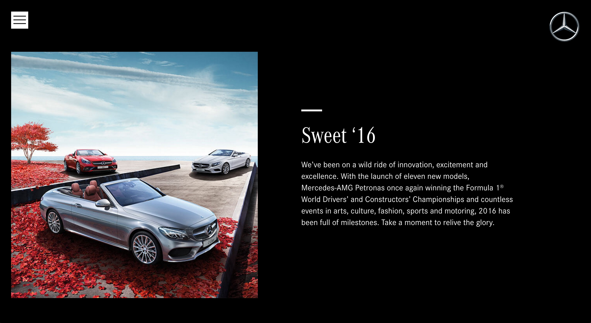
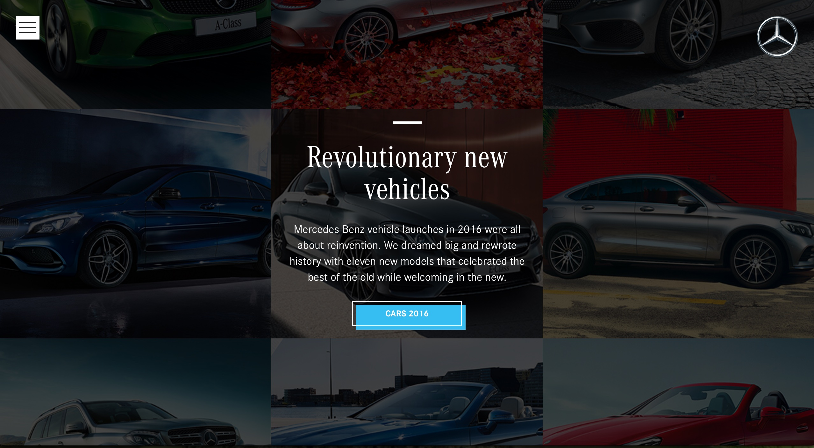
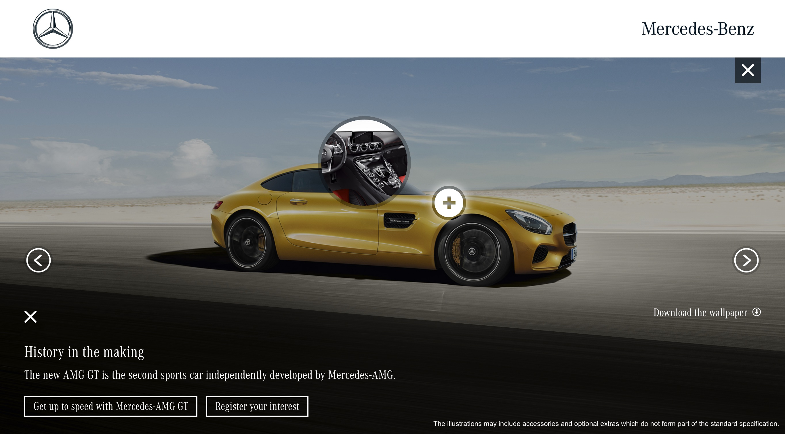
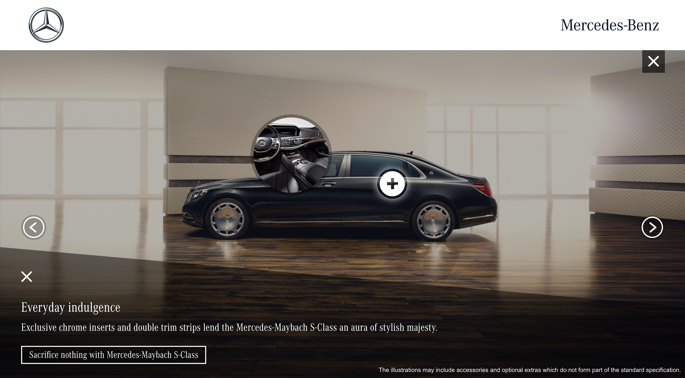
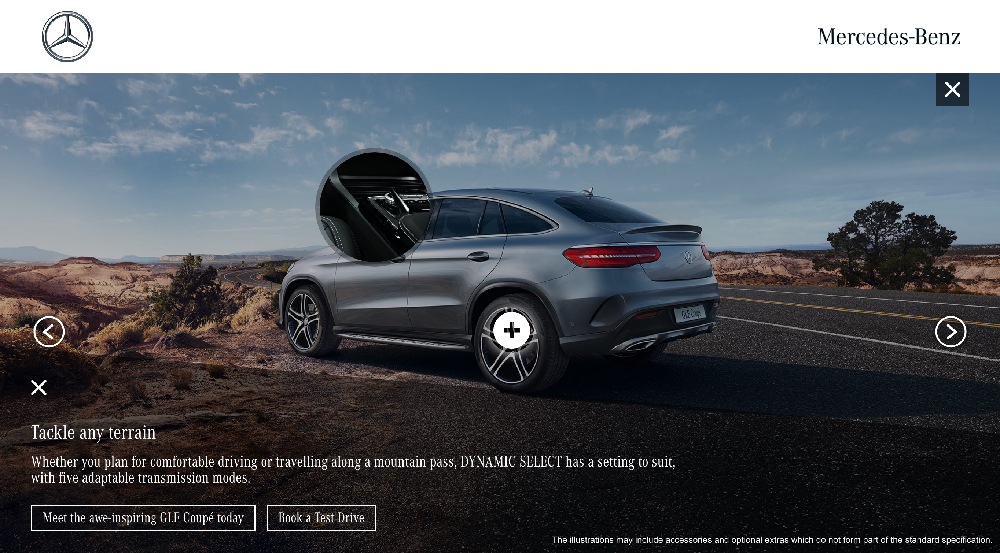
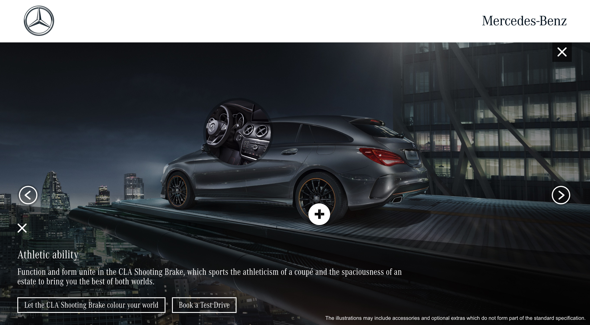
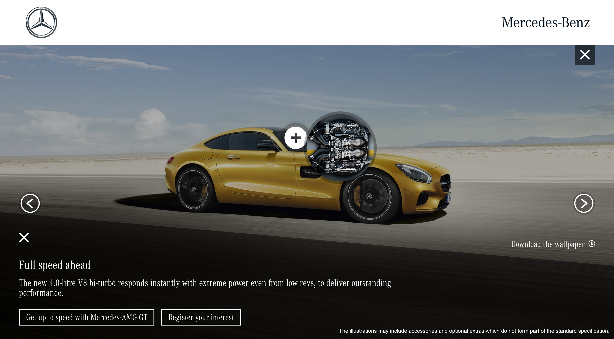
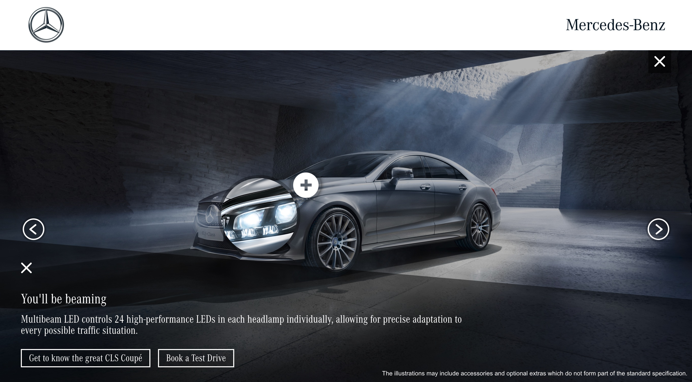